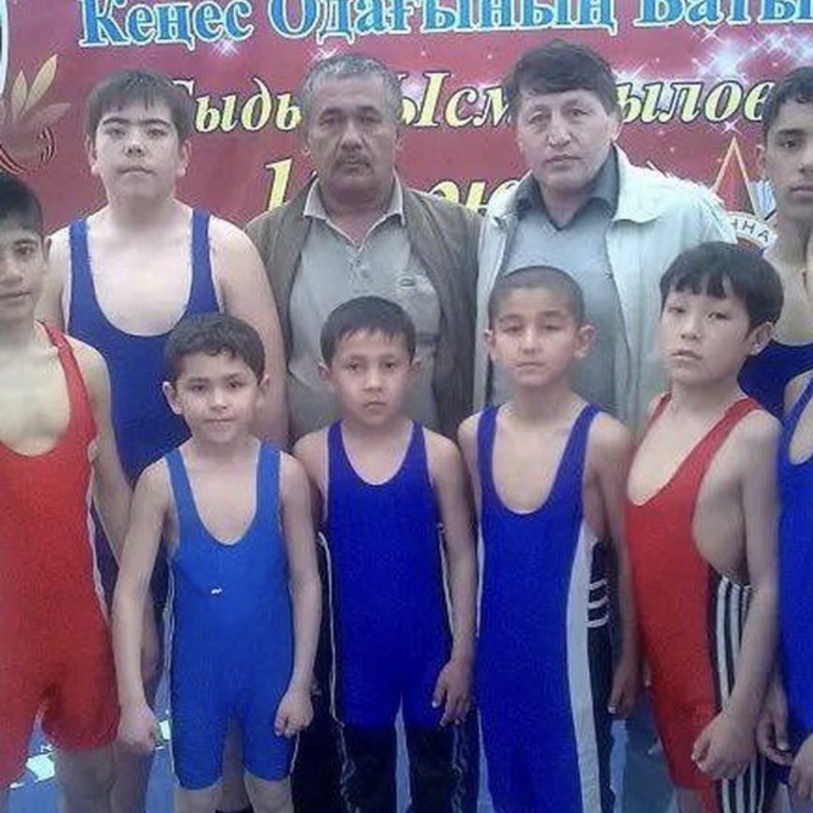
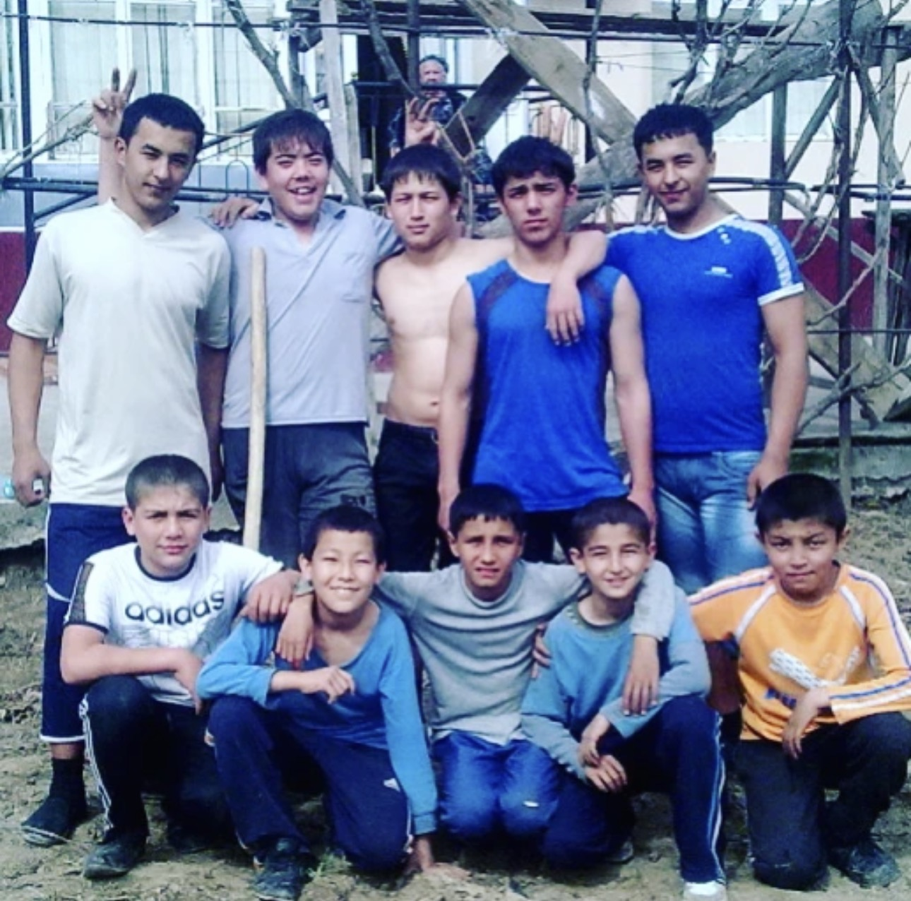
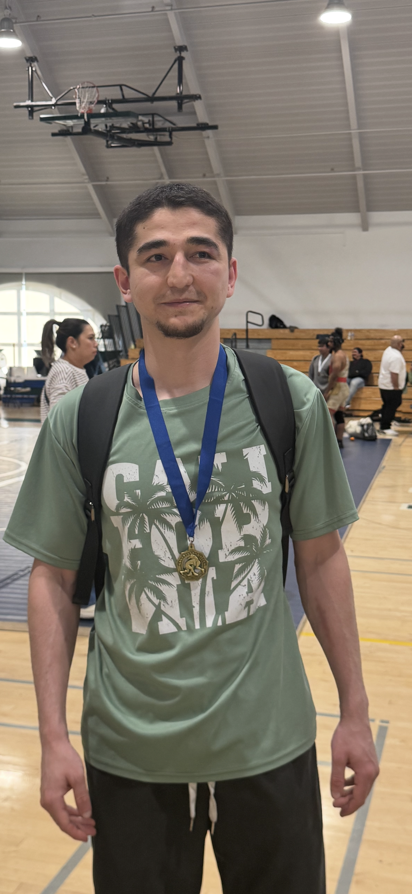
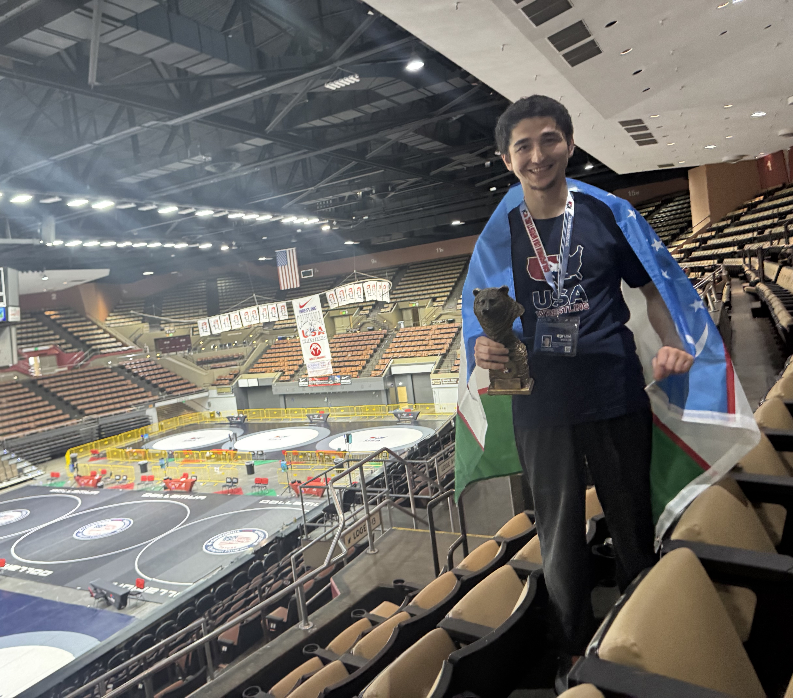
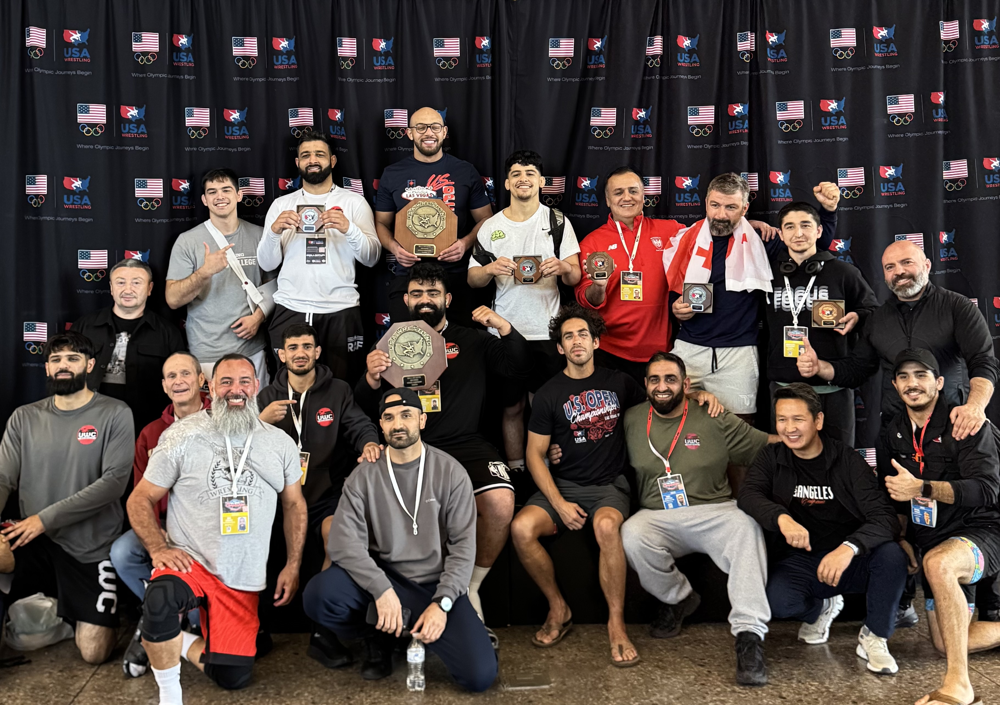
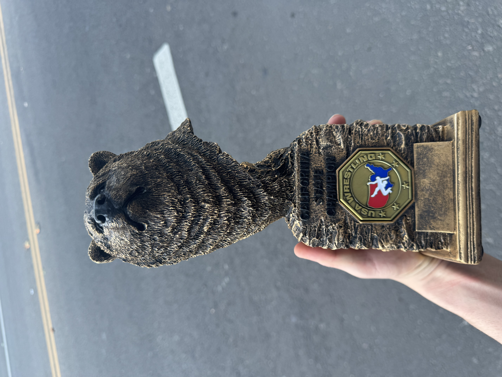

✕
A wrestler. A student of the sport. From the streets of Tashkent to the mats of California — Akhmadjon Khasanjonov who has spent enough time on every millimeter of mat space. The mat doesn't care where you're from. Neither does he.
Akhmadjon Khasanjonov took up Greco-Roman wrestling in 2010 at the age of ten — a skinny school kid weighing barely twenty kilograms, stepping onto a dusty mat for the first time. Nobody predicted what would follow. In a country where wrestling is a way of life, he quietly began building something extraordinary — one tournament, one medal, one year at a time. That is still how he operates.


Tashkent, Uzbekistan — early training years



Before any US competition, before any California trophy — there were medals earned on the mats of Uzbekistan and Kazakhstan. Gold, silver, and bronze from city championships, regional tournaments, national qualifiers, and international events.
A United World Wrestling (UWW) plaque sits among the collection — proof that the work was recognized at the highest governing body of the sport before he ever stepped foot in California.

US Open Masters Nationals · Las Vegas, Nevada · 2026
Arriving in California, Akhmadjon reconnected with the mat. The US wrestling system is different — different rules, different culture, different competition format. But the discipline built in Tashkent transfers to any mat in the world.
By 2026, competing in California, the results came fast. Two first-place finishes, a national competition, and the California State Championship — all within the same year. Representing both the wrestling tradition of Uzbekistan and his new home of California.
